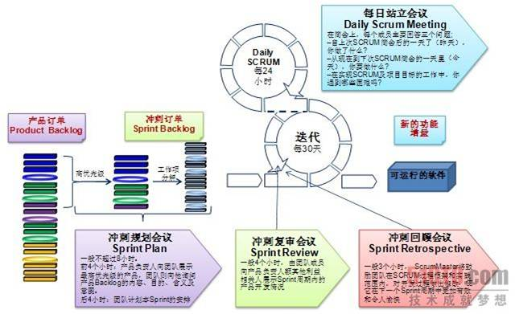

| Scrum Overview Scrum简介 |
关系
| 内容 |
|---|
主要描述
Scrum projects make progress in a series of "sprints". Sprint are analogous to iterations. The typical duration of a sprint is 2-4 weeks.  Scrum项目依赖于一系列的“冲刺（sprint）”获得进展。“冲刺”类似于迭代。 一个sprint的典型持续的时间是2 - 4周。 |

This program and the accompanying materials are made available under the
Copyright © 1998--2008 Mountain Goat Software. All rights reserved. 翻译者：fasiondog |